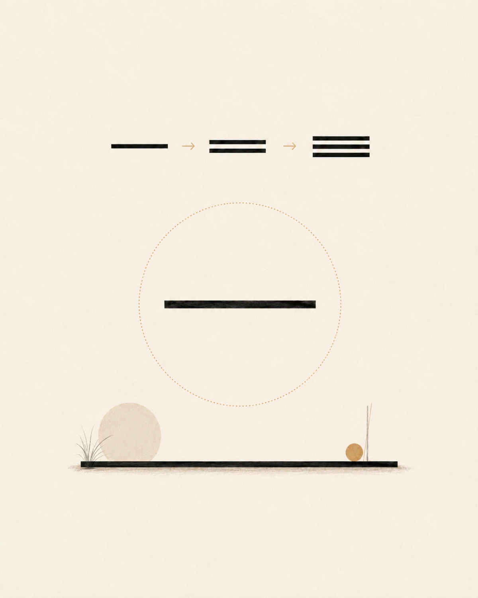
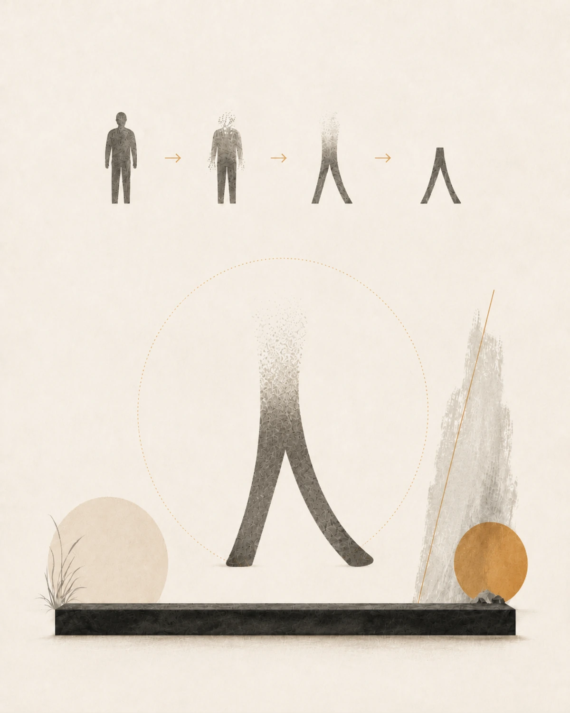
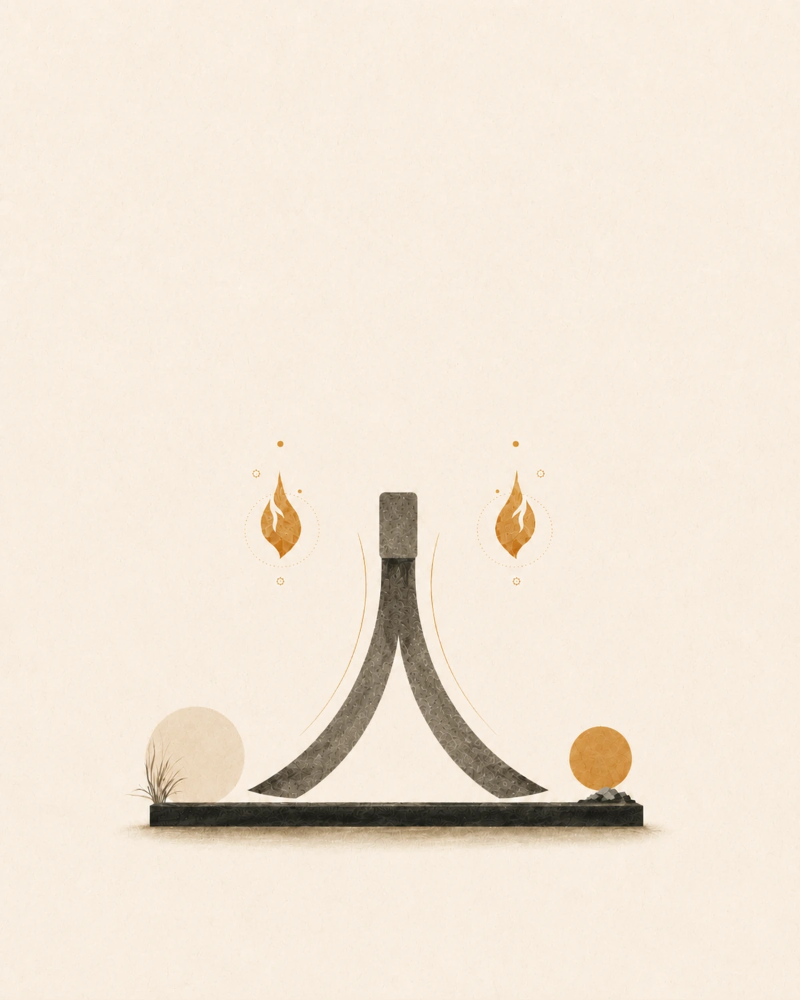
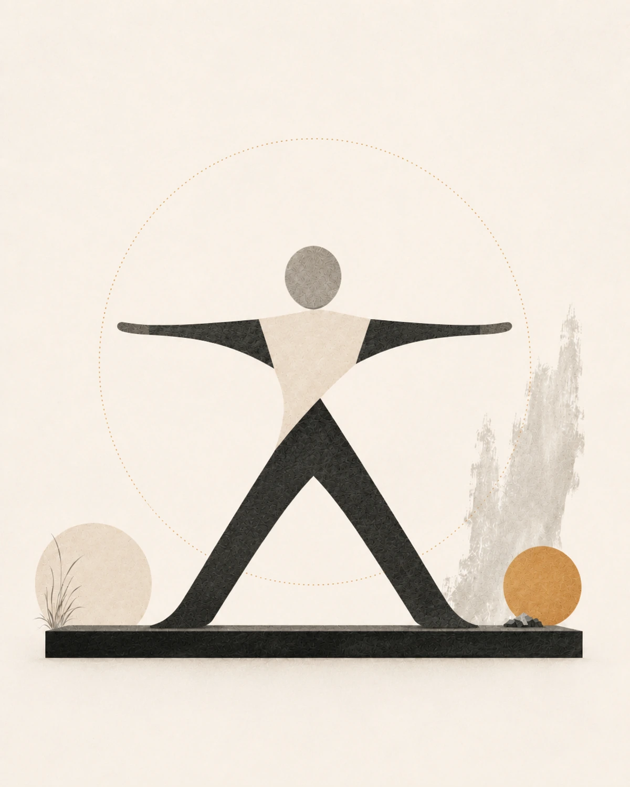
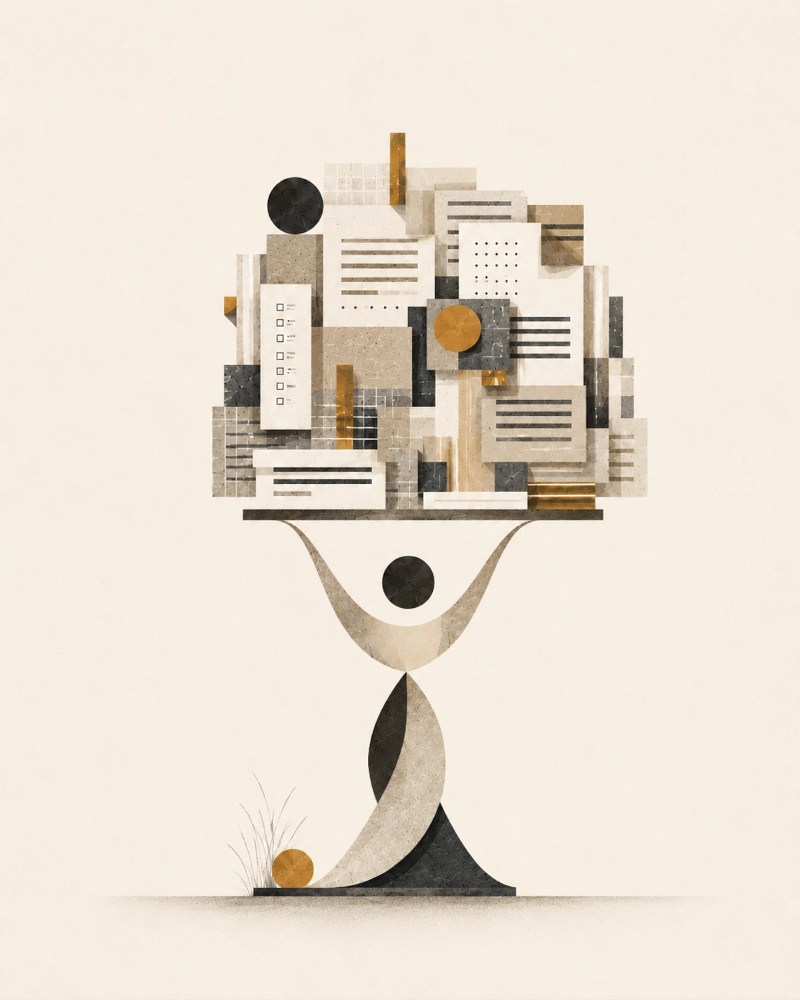

一
在中国人看来，一是基本的、起初的。所以平，所以深长，道生一。一生二，二生三，三生万物。西人的1是站着的。不牢靠但较有动感。一，它允许二三叠起来，有积累的快乐。西人的1，是数字的魔术，所有的阿拉伯数字，都是1的变体。
Project name:
This project explores how Chinese characters exist within, and can be approached through, the bits and bytes of the digital grid. The title is derived from an essay by Chinese avant-garde writer Chen Cun (陈村). Using InkScape, an open-source vector graphics editor, and Generative AI tools like ChatGPT and Kimi, this project illustrates Chinese characters based on Chen Cun’s dissection and reinterpretation of them. Proposing that Chen’s essay critically reflects on the use of Chinese Input Method Editors (IMEs) in an increasingly digitized Chinese-language creative environment, this project employs digital illustration to examine how digitization influences our perception of ideographic Chinese characters. It invites viewers to “gaze upon” the characters, attempt to recognize them, and consider the future of Chinese writing in the digital age. Drawing inspiration from ShaoLan Hsueh’s Chineasy, it also aims to serve as a pedagogical tool in the near future.
Five preliminary visual studies, presented in the order in which the characters appear in Chen Cun’s essay.

在中国人看来，一是基本的、起初的。所以平，所以深长，道生一。一生二，二生三，三生万物。西人的1是站着的。不牢靠但较有动感。一，它允许二三叠起来，有积累的快乐。西人的1，是数字的魔术，所有的阿拉伯数字，都是1的变体。

几乎没有比它更简单的字了。一撇一捺，是个稍息的姿势。人的头被忽略了，手被忽略了。我们最看重的东西居然可以不算。造字的时候，仓颉注重的是人的直立，这是人的最显著的特征了。人，很舒展，写起来特别舒服。

在人的耳朵那儿弄出两点，代表两朵小火苗。真是喜气洋洋的。那两点悬在半空，上不巴天，下不着地，飘飘忽忽的，很传神。

人的两手侧平举，就大了。大总是源于扩张。似乎是人伸懒腰的样子。

女的上面是事啊。女人的头上顶着那么多的事情，一眼望过去数也数不清。
陈村：《望字拆字》
On some mobile browsers, the PDF opens more reliably in a separate tab using the link above.